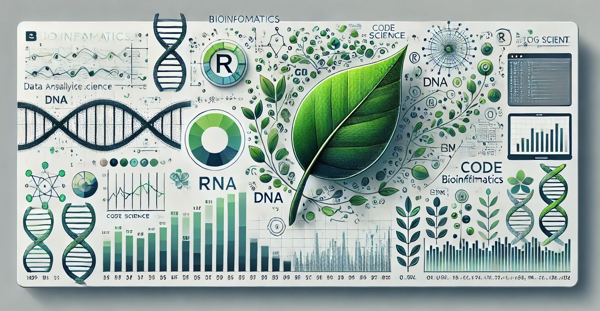
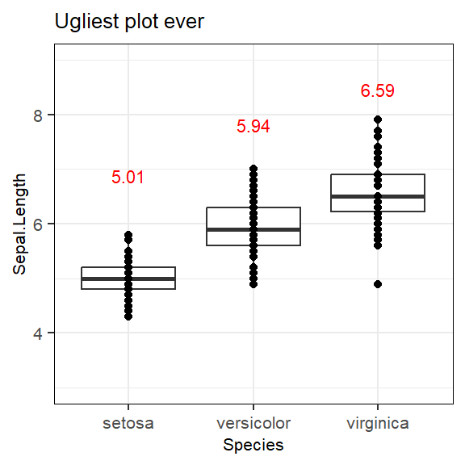

path_data <- file.path("Folder1","SubFolder1","Data")
Organize first, program later. Having a predefined structure for your bioinformatic projects can save you significant time and effort when it comes to publishing your results and sharing your code with colleagues. It also makes programming itself more efficient by helping you avoid the chaos of disorganized files scattered across multiple folders, repetitive objects taking up space, or endlessly copy-pasting parts of the same code.
To help you to avoid these pitfalls (which may or may not be based on my personal experience), I am sharing 10 useful tips to keep in mind before starting your bioinformatics journey in R.
One problem, one project
At this point of my life, everything that I do in R lives within a RStudio Project. RStudio Projects act as containers, creating an environment where you have access to all the files, data, and configurations you need for a specific analysis. A project can vary in size, from small tasks to large-scale analyses, but it’s important to keep a logical structure. I wouldn’t create a single project for my entire PhD thesis. Instead, I would break it down into separate projects, each focusing on a set of related analyses. For example, for the purposes of this blog, I will create a separate RStudio project for each analysis, with each analysis corresponding to a different post.
When creating separate RStudio Projects, it is important to think about how long you’ll be working on a specific analysis. If you add new analyses within the same project that require different package versions, it could break earlier analyses that depend on older versions. By keeping projects focused and limiting their scope, you can maintain consistency in the tools and package versions, which is essential for reproducibility and version control. This brings us to the next tip.
More info on how to create R Projects: Using RStudio Projects
Create reproducible environments with renv
The renv package is a powerful tool for managing reproducible environments in your R projects. It creates a separate library specifically for the packages you use in a project. This allows you to save and lock the exact versions of packages used during your analysis, ensuring consistent results whether revisiting the project in the future or sharing it with colleagues. By sharing the renv environment along with your code, you can guarantee that others can reproduce your work without version conflicts or missing dependencies.
More info on renv: Introduction to renv
Switch to notebooks for collaborative and clearer code
Making the transition from R scripts (.R) to R notebooks (.Rmd) can be a game changer. While scripts are great for your workflow, notebooks are much more effective when it comes to sharing your analysis in scientific publications or with collaborators. They allow you to embed plots, outputs, and explanations directly alongside your code, making your work far more accessible and easier to understand.
Use file.path() for referring directories
Use this:
Instead of this:
path_data <- ("Folder1/SubFolder1/Data")By using file.path(), your code becomes compatible with different operating systems. As long as your directory structure is the same, the path will work seamlessly, whether you’re on Windows, macOS, or Linux.
Use set.seed() at the beginning of your analysis
Keep randomness under control. For ensure reproducibility in you analysis, use always a seed value. For example:
set.seed(101)Create your theme for ggplot2
Whenever possible, I use ggplot2 for creating plots. To maintain a consistent style across all your figures—such as in a publication—while avoiding repetitive code, save your theme settings in a variable:
library(ggplot2)
theme_blog <- theme_bw() +
theme(text = element_text(size=8, family="sans"),
axis.text = element_text(size=8, family="sans"),
element_line(linewidth = 0.1),
panel.border = element_rect(colour = "black", fill=NA, linewidth = 0.1),
strip.background = element_rect(colour = "black", linewidth = 0.1))When you use geom_text in your plots, the font size will be not match the output. To get the size that you want (e.g. 8) you should multiply the value by 5/14
library(dplyr)
mean_values <- iris %>%
group_by(Species) %>%
summarise(mean_sepal_length = mean(Sepal.Length))
ggplot(data=iris, aes(x=Species,y=Sepal.Length))+
geom_boxplot()+
geom_point()+
geom_text(data = mean_values, aes(x = Species, y = mean_sepal_length+1.5,
label = round(mean_sepal_length, 2)),
vjust = -1, color = "red", size = 8*5/14)+
ylim(c(3,9))+
ggtitle("Ugliest plot ever")+
theme_blog
Convert your code into functions
As Hadley Wickham notes in R for Data Science:
During my postdoc, I frequently analyzed single-cell RNA sequencing datasets using Seurat. Often, I found myself repeating the default pipeline for data normalization and dimensionality reduction. This pipeline involves a series of steps, and instead of copying and pasting the same code repeatedly, I realized I could encapsulate the process into a reusable function. Here’s an example inspired by the tutorial Using sctransform in Seurat.
Transform this:
#Load packages
library(Seurat)
#Perform sctransform
pbmc <- CreateSeuratObject(counts = pbmc_data)
pbmc <- SCTransform(pbmc)
pbmc <- RunPCA(pbmc)
pbmc <- RunUMAP(pbmc)
pbmc <- FindNeighbors(pbmc)
pbmc <- FindClusters(pbmc)Into this:
#Load packages
library(Seurat)
library(dplyr)
DefaultSeuratPipeline <- function(count_matrix,...){
# Check if the input is valid
if (!is.matrix(count_matrix) && !is(count_matrix, 'dgCMatrix'))
stop("count_matrix must be a matrix or a sparseMatrix")
#Run basic analysis
object_seurat <- CreateSeuratObject(count_matrix) %>%
SCTransform() %>%
RunPCA() %>%
RunUMAP() %>%
FindNeighbors() %>%
FindClusters()
return(object_seurat)
}
pbmc<- DefaultSeuratPipeline(count_matrix = pbmc_data)
## This is just a very simplified example to show how to transform a series of
## steps into a function.Centralize reusable code with a configuration file
Imagine you are starting a new RStudio Project for the analysis related to a scientific publication. Within this project, you may create separate notebooks for each analysis related to different figures. Despite this modular setup, you will often reuse common elements like datasets, functions, themes, color schemes, or package imports. Instead of duplicating code across notebooks, create a centralized configuration file (e.g., my_config.R) to store these shared elements.
Here’s an example of what your configuration file (my_config.R) might look like:
#Set seed
set.seed(101)
##################################################
######## Load packages ###########################
##################################################
library(Seurat)
library(ggplot2)
library(dplyr)
################################################
########## Directories #########################
################################################
seurat_objects_path <- file.path("Data","Seurat")
root_ath_object <- "root_ath.rds"
################################################
########## Functions #########################
################################################
#Function to run default pipeline in Seurat
DefaultSeuratPipeline <- function(count_matrix,...){
# Check if the input is valid
if (!is.matrix(count_matrix) && !is(count_matrix, 'dgCMatrix'))
stop("count_matrix must be a matrix or a sparseMatrix")
#Run basic analysis
object_seurat <- CreateSeuratObject(count_matrix) %>%
SCTransform() %>%
RunPCA() %>%
RunUMAP() %>%
FindNeighbors() %>%
FindClusters()
return(object_seurat)
}
################################################
########## ggplot2 themes ####################
################################################
theme_blog <- theme_bw() +
theme(text = element_text(size=8, family="sans"),
axis.text = element_text(size=8, family="sans"),
element_line(linewidth = 0.1),
panel.border = element_rect(colour = "black", fill=NA, linewidth = 0.1),
strip.background = element_rect(colour = "black", linewidth = 0.1))By creating this configuration file, you can simply call it in any of your notebooks with:
#Notebook and configuration file in the same directory
source("my_config.R")This approach avoids the need for repetitive copy-pasting of code. Additionally, if you need to update a directory path, theme setting, or function, you only need to make the change in my_config.R, rather than updating it across multiple notebooks.
Export your plots in a vectorized format
Save your plots in a vectorized format like PDF using ggsave() for high resolution. While this makes it easy to edit in Illustrator or Inkscape, I try to customize as much as possible in R to improve reproducibility.
ggsave(plot1,file=file.path("Figures","Figure1A.pdf"), width=5.5,
height=9.5, units="cm", dpi=1000)